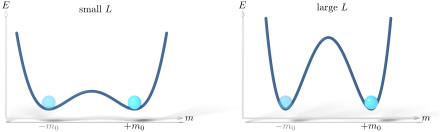
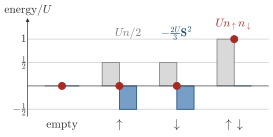

Page 2 of 11 of this session
6.2 A recap of symmetry breaking and the mean-field philosophy
What does mean-field theory do with a repulsive interaction \(U\), and why can the magnet that it gives point in any direction? We will see that the difference of the two spin densities, which is the magnetization, acts on the electrons as an exchange field that splits the two spins by \(Um\). We will also see that the Hubbard term of one site can be written with the local spin and the number of electrons, in a form that does not choose an axis.
The idea behind both answers is spontaneous symmetry breaking in mean field. We have already used it twice in this course, first in a small form in Section 1.11 of Session 1 and then in full detail for superconductivity in Session 5. Let us state it once more, in a short way, before we apply it to magnetism.
Many-body interactions can spontaneously break a symmetry that the Hamiltonian itself has. Three cases appear in the whole course. Magnets break time-reversal symmetry, and they also break spin-rotation symmetry, since a magnetic moment breaks both. Charge density waves break the translational symmetry of the lattice. Superconductors break gauge symmetry. All three emerge from the same generic starting point, which is a kinetic term that is single-particle and exactly solvable, plus a quartic many-body interaction. All three are also obtained in the same way. Mean-field theory factorizes the quartic term by replacing part of it with its expectation value. This turns a many-body problem that we cannot solve into a single-particle problem that we can solve, and we solve it self-consistently.

Where do the interactions themselves come from? There are two sources. The electrostatic, or Coulomb, repulsion between electrons is the classical contribution, and it is always present. Interactions can also be mediated by other quasiparticles, such as phonons, magnons or plasmons, and these can change the net effective interaction from repulsive to attractive. Magnetism needs a net interaction that is repulsive. The bare Coulomb repulsion is already repulsive, so this case is easy to realize, which is one of the reasons why magnetism is so common in nature.
6.3 The Hubbard model and mean-field magnetism, revisited
The minimal Hamiltonian for all of this is the one-dimensional Hubbard chain that we first saw in equation (1.7) of Session 1,
\[H = -t\sum_{n,\sigma}\left(c_{n\sigma}^\dagger c_{n+1,\sigma} + \text{h.c.}\right) + U\sum_n c_{n\uparrow}^\dagger c_{n\uparrow}\, c_{n\downarrow}^\dagger c_{n\downarrow}, \tag{6.1}\]
which is the hopping \(t\) plus a purely local onsite density-density interaction between opposite spins, called the Hubbard term. A negative \(U\), which is attractive, gives rise to superconductivity, which was the topic of Session 5, with the same chain written as (5.2). A positive \(U\), which is repulsive, gives rise to magnetism, which is our topic in this session.
The mean-field decoupling is done in the same way as before. We replace \(c_{n\uparrow}^\dagger c_{n\uparrow}\) and \(c_{n\downarrow}^\dagger c_{n\downarrow}\) by their expectation values, and we obtain a bilinear Hamiltonian with onsite energies that depend on the spin. Nothing forces these two expectation values to be equal, and the difference between them is the magnetization \(m\).
The magnetization of a site is the difference of its two spin densities,
\[m = \langle c_\uparrow^\dagger c_\uparrow\rangle - \langle c_\downarrow^\dagger c_\downarrow\rangle. \tag{6.2}\]
In mean field it acts on the electrons as an exchange field. This field can point along any direction of the spin \(\langle\mathbf S\rangle\) of the site, and it splits the two spins by \(2U|\langle\mathbf S\rangle|\). For a moment along \(z\) we have \(2|\langle\mathbf S\rangle|=2\langle S^z\rangle=m\), so this splitting is \(Um\).
The magnetization (6.2) plays the role of an exchange field. In a schematic form, the resulting mean-field Hamiltonian is \(H_\text{MF} \sim -\tfrac{U}{2}\, m\, \boldsymbol\sigma\cdot c\), where \(\boldsymbol\sigma\) is the vector of Pauli matrices. Self-consistency gives \(m=0\) for \(U<0\), and in the half-filled chain a magnetic solution with \(m\neq 0\) for every \(U>0\), as in Section 1.14.
There is a more careful point here. Nothing in this construction chooses the \(z\) axis. For a single site, the Hubbard interaction can be rewritten exactly in terms of the local spin operator \(\mathbf{S} = \tfrac12 c_\alpha^\dagger \boldsymbol\sigma_{\alpha\beta} c_\beta\) and the total occupation \(n = n_\uparrow + n_\downarrow\), as \(U\, n_\uparrow n_\downarrow = \tfrac{U}{2}n - \tfrac{2U}{3}\mathbf{S}^2\). Here we used that a single site has \(\mathbf{S}^2=\tfrac34(n-2n_\uparrow n_\downarrow)\), since only a singly occupied site has a spin. Mean-field theory then factorizes the quadratic operator \(\mathbf{S}^2\) in the same way as any product of two operators, \(\mathbf{S}^2 \approx 2\langle\mathbf{S}\rangle\cdot\mathbf{S} - \langle\mathbf{S}\rangle^2\). The resulting exchange field points along \(\mathbf{m} \equiv 2\langle\mathbf{S}\rangle\), in any direction where this expectation value is nonzero. With the factor 2, the component \(m_z=2\langle S^z\rangle\) is the \(m\) of (6.2). If we choose \(\langle c_\uparrow^\dagger c_\uparrow\rangle \neq \langle c_\downarrow^\dagger c_\downarrow\rangle\), as in (6.2), we select \(m_z\neq 0\). If we choose instead \(\langle c_\uparrow^\dagger c_\downarrow\rangle \neq 0\), we select \(m_x\) or \(m_y\). For this reason mean-field magnetism is not restricted to the \(z\) axis. It gives magnets with a magnetization along any direction in space, and this includes noncollinear arrangements where \(\mathbf{m}\) points in different directions on different sites.
The steps From the Hubbard term to an exchange field
Let us start with one site, which has the four states \(|0\rangle\), \(|\!\uparrow\rangle\), \(|\!\downarrow\rangle\) and \(|\!\uparrow\downarrow\rangle\). On these states the number of electrons \(n\) is \(0\), \(1\), \(1\) and \(2\), the product \(n_\uparrow n_\downarrow\) is \(0\), \(0\), \(0\) and \(1\), and \(\mathbf S^2=S(S+1)\) is \(0\), \(\tfrac34\), \(\tfrac34\) and \(0\). The doubly occupied site has no spin, since its two electrons sit in the same orbital and form a singlet. The three lists give
\[\mathbf S^2=\tfrac34\big(n-2n_\uparrow n_\downarrow\big)\]
on every state, and when we solve it for \(n_\uparrow n_\downarrow\) we get
\[U n_\uparrow n_\downarrow=\frac U2\, n-\frac{2U}{3}\,\mathbf S^2.\]
This is an identity of operators, so it holds before any approximation.
The approximation comes next. We write \(n_\sigma=\langle n_\sigma\rangle+\delta n_\sigma\) and drop the product \(\delta n_\uparrow\,\delta n_\downarrow\) of the two fluctuations, which gives the bilinear
\[U n_\uparrow n_\downarrow\approx U\langle n_\downarrow\rangle\, n_\uparrow+U\langle n_\uparrow\rangle\, n_\downarrow-U\langle n_\uparrow\rangle\langle n_\downarrow\rangle.\]
An electron of spin up then feels the onsite energy \(U\langle n_\downarrow\rangle\), and an electron of spin down feels \(U\langle n_\uparrow\rangle\). The last term is a number, which keeps the interaction from being counted twice in the total energy.
The decoupling of \(\mathbf S^2\) in the text gives a field along \(\langle\mathbf S\rangle\), so it fixes the direction. For a moment along \(z\), however, it splits the two spins by \(\tfrac23Um\) and not by \(Um\). A quartic term can be decoupled in more than one way, and the ways do not give the same size, so for the size we use the decoupling of the densities above. The reason is that this decoupling, completed below, is the Hartree-Fock one. Its energy is the expectation value of the Hubbard term in a Slater determinant. The \(\mathbf S^2\) route has no such energy. For one electron with spin up we have \(|\langle\mathbf S\rangle|=\tfrac12\), and this route gives the energy \(\tfrac U2-\tfrac{2U}{3}\cdot\tfrac14=\tfrac U3\), while the Hubbard term of this state is zero. When we complete the decoupling of the densities with the averages \(\langle c_\uparrow^\dagger c_\downarrow\rangle\), an electron on the site feels the matrix \(\tfrac U2\langle n\rangle-U\langle\mathbf S\rangle\cdot\boldsymbol\sigma\). Its field also points along \(\langle\mathbf S\rangle\), and it splits the two spins by \(2U|\langle\mathbf S\rangle|\) for any direction of \(\langle\mathbf S\rangle\). This is \(Um\) for a moment along \(z\), since the \(m\) of (6.2) is \(2\langle S^z\rangle\).

Mean field can only be trusted when \(U \ll t\). We will see in Section 6.6 that magnetism usually needs the opposite regime, and this is the reason why the strongly localized limit, from Section 6.7 on, is so important.
Suspended graphene multilayers with Bernal stacking have a broken-symmetry ground state, and the authors write that its origin remains to be understood. They show that a phase transition of second order occurs at a finite temperature, with a critical temperature \(T_c\) that increases from \(12\) K in bilayers to \(100\) K in heptalayers. The authors compare their data with a phenomenological model inspired by a mean-field approach. The comparison suggests that the transition comes with a self-consistent staggered potential that depends on the valley and on the spin. In this model the potential changes sign from one layer to the next, appears at \(T_c\) and increases upon cooling. The measurement is in this article, which is also the one given in the notebook session6.ipynb. Our reading is that the potential acts as an exchange field of the kind of (6.2) if its spin dependence is the same in the two valleys. In our reading this field alternates in sign from layer to layer. If the spin dependence changes sign between the valleys, our reading is that the spin of each layer adds up to zero and there is no such field. The abstract names no probe, and it does not say which pattern of spin and valley the potential has.
Mean field replaces the Hubbard term \(Un_\uparrow n_\downarrow\) of one site by a bilinear term. We write \(\bar n_\sigma=\langle n_\sigma\rangle\) for the average density of spin \(\sigma\). Which term is it?
Show the answers
- A. ✓ True
This is true. The Hubbard term minus this one is \(U\,\delta n_\uparrow\,\delta n_\downarrow\), with \(\delta n_\sigma=n_\sigma-\bar n_\sigma\), so only the product of two fluctuations is dropped. A spin-up electron feels \(U\bar n_\downarrow\) and a spin-down electron feels \(U\bar n_\uparrow\).
- B. ✗ False
This is false. It is a number and not an operator, so it does not act on the electrons. Take \(U=4t\), \(\bar n_\uparrow=0.6\) and \(\bar n_\downarrow=0.4\). This term is the constant \(0.96t\) and both spins keep the same energy, while the right term splits them by \(Um=0.8t\).
- C. ✗ False
This is false. It couples to the total density, so both spins get the same shift. For \(U=4t\), \(\bar n_\uparrow=0.6\) and \(\bar n_\downarrow=0.4\), mean field gives \(\langle n_\uparrow n_\downarrow\rangle=0.24\). Both spins then move up by \(0.96t\), and the splitting is zero instead of \(0.8t\).
The spin of a site along \(x\) is
\[S^x=\tfrac12\big(c_\uparrow^\dagger c_\downarrow+c_\downarrow^\dagger c_\uparrow\big).\]
Mean field decouples the Hubbard term with expectation values. Which one gives a moment along \(x\)?
Show the answers
- A. ✗ False
This is false. Take the spinor \((1,1)/\sqrt2\), which points along \(x\). It has \(n_\uparrow=n_\downarrow=1/2\), so this difference is zero, although \(\langle S^x\rangle=1/2\). The difference of densities gives the moment along \(z\).
- B. ✓ True
This is true. The expectation value \(\langle S^x\rangle\) is the real part of \(\langle c_\uparrow^\dagger c_\downarrow\rangle\). For the spinor \((1,1)/\sqrt2\) this expectation value is \(1/2\), so \(\langle S^x\rangle=1/2\).
- C. ✗ False
This is false. For the same spinor \((1,1)/\sqrt2\) the expectation value \(\langle c_\uparrow c_\downarrow\rangle\) is zero, since the state has one electron. This is the pair amplitude of a superconductor, and it changes \(N\) by two.
The Hubbard energy of one site is
\[Un_\uparrow n_\downarrow=\frac U2\,n-\frac{2U}{3}\,\mathbf S^2.\]
Here \(n\) is the number of electrons and \(\mathbf S\) is the spin of the site. Which state of the site pays the energy \(U\)?
Show the answers
- A. ✗ False
This is false. It has \(n=1\) and \(\mathbf S^2=\tfrac34\), so the energy is \(\tfrac U2-\tfrac{2U}{3}\cdot\tfrac34=0\). The spin term cancels the charge term.
- B. ✓ True
This is true. It has \(n=2\) and \(\mathbf S^2=0\), since its two electrons form a singlet, so the energy is \(U\). At a fixed number of electrons, a repulsive \(U\) therefore favors sites with one electron and a local spin.
- C. ✗ False
This is false. It has \(n=0\) and \(\mathbf S^2=0\), so both terms vanish and the energy is zero.
Decouple the Hubbard term \(Un_\uparrow n_\downarrow\) of one site in mean field. Show that a spin-down electron has an onsite energy higher by \(Um\) than a spin-up electron, with \(m=\langle n_\uparrow\rangle-\langle n_\downarrow\rangle\). Then take the chain with the band \(-2t\cos k\), \(U=4t\) and \(n=0.2\) electrons per site, all with spin up. Find the splitting, and check that no spin-down state is filled.
Solution
We write \(n_\sigma=\langle n_\sigma\rangle+\delta n_\sigma\) and drop the product \(\delta n_\uparrow\,\delta n_\downarrow\) of the two fluctuations, which gives
\[Un_\uparrow n_\downarrow\approx U\langle n_\downarrow\rangle\, n_\uparrow+U\langle n_\uparrow\rangle\, n_\downarrow-U\langle n_\uparrow\rangle\langle n_\downarrow\rangle.\]
A spin-up electron feels the onsite energy \(U\langle n_\downarrow\rangle\) and a spin-down electron feels \(U\langle n_\uparrow\rangle\), so
\[E_\downarrow-E_\uparrow=U\big(\langle n_\uparrow\rangle-\langle n_\downarrow\rangle\big)=Um.\]
In the chain all the electrons have spin up, so \(\langle n_\uparrow\rangle=0.2\), \(\langle n_\downarrow\rangle=0\) and \(m=0.2\). At \(U=4t\) the splitting is \(Um=0.8t\). One spin band holds one electron per site, so the spin-up band is filled from \(-2t\) up to the Fermi level \(-2t\cos(\pi n)=-1.618t\). The spin-down band is the same band moved up by \(0.8t\), so it starts at \(-1.2t\), which is above the Fermi level. No spin-down state is filled, and the state gives back the \(m\) that we started from, meaning that it is self-consistent.
This splitting is the one between the two spin bands of the ferromagnetic chain of Section 6.4. In a measurement it is the exchange splitting of the bands. Spin-resolved photoemission reads it as the energy between the two spin bands when both bands are partly filled. Photoemission removes electrons, so it sees only filled states. In the fully polarized chain of this problem the spin-down band is empty, and photoemission sees only the spin-up band.
- In Section 6.6 we find the threshold of \(U\) above which a uniform magnetization \(m\) of (6.2) appears.
- In Section 7.1 the mean-field strategy of this section defines weakly correlated matter, and tensor networks are built for the cases where it fails.
- In Section 8.9 a mean-field decoupling that does not break time-reversal symmetry gives the spinons of a quantum spin liquid.
- In Section 9.5b the same magnetic instability appears as a divergence of the spin response, with the Stoner criterion (9.8).